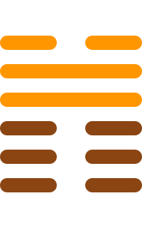

第四十五卦
萃卦

卦辞
亨。王假有庙，利见大人，亨，利贞。用大牲吉，利有攸往。
萃卦象征聚集、会合与团结。卦辞意为：亨通。王至于庙，利于见大人，亨通，利于坚守正道。用大牲吉祥，利于有所前往。萃卦教导我们团结聚集的重要性。
n
彖传
萃，聚也。顺以说，刚中而应，故聚也。王假有庙，致孝享也。利见大人亨，聚以正也。用大牲吉，利有攸往，顺天命也。观其所聚，而天地万物之情可见矣。
彖传说：萃，聚也。顺以说，刚中而应，故聚也。王假有庙，致孝享也。利见大人亨，聚以正也。用大牲吉，利有攸往，顺天命也。观其所聚，而天地万物之情可见矣。
象传
泽上于地，萃。君子以除戎器，戒不虞。
象传说：泽上于地，就是萃卦。君子应当效法这种精神，修治兵器，戒备不测。泽水在地上，象征聚集的力量。
爻辞
初六：有孚不终，乃乱乃萃，若号一握为笑，勿恤，往无咎
有诚信不终，乃乱乃萃，若号一握为笑，不必忧虑，前往无灾害。
初六爻位于最下方，诚信不终。有诚信不终，乃乱乃萃，若号一握为笑，不必忧虑，前往无咎，表示诚信的重要。
六二：引吉，无咎，孚乃利用禴
牵引吉祥，无灾害，诚信乃利于禴祭。
六二爻得中得正，牵引吉祥。牵引吉祥，无咎，诚信乃利于禴祭，表示诚信祭祀。
六三：萃如，嗟如，无攸利，往无咎，小吝
萃如，嗟如，无所利，前往无灾害，小困难。
六三爻位置不当，嗟叹。萃如，嗟如，无所利，前往无咎，小吝，表示虽有困难但无害。
九四：大吉，无咎
大吉祥，无灾害。
九四爻接近君位，大吉祥。大吉祥，无咎，表示聚集之利。
九五：萃有位，无咎。匪孚，元永贞，悔亡
萃有位，无灾害。不诚信，大永远坚守正道，悔恨消亡。
九五爻居中尊位，萃有位。萃有位，无咎。匪孚，元永贞，悔亡，表示坚守正道。
上六：赍咨涕洟，无咎
赍咨涕洟，无灾害。
上六爻位于极点，涕洟。赍咨涕洟，无咎，表示虽悲伤但无害。